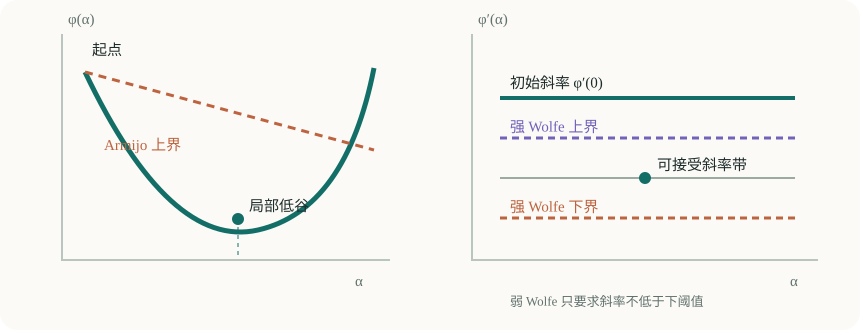

3.1.1 Wolfe 条件：让步长既下降又不过短
只要求函数值变小，算法可能接受几乎不动的步子；只追求大步，又可能越过有用区域。Wolfe 条件把“下降多少”和“还剩多少下降空间”放进同一套检查。
为什么单纯下降还不够
在迭代点 xk 处，给定一个下降方向 pk，满足 ∇f(xk)ᵀpk<0。线搜索把多维目标限制到一条射线上，定义 φ(α)=f(xk+αpk)，其中 α>0。链式法则给出 φ′(0)=∇f(xk)ᵀpk<0。
若只要求 φ(α)<φ(0)，那么任意足够小的 α 都可能被接受。算法每次确实下降，却可能因为每一步都太短而几乎没有进展。Wolfe 条件增加曲率检查：在已经获得足够下降之后，还要确认沿当前方向继续前进的边际收益没有大到“现在停下明显太早”。

弱 Wolfe：充分下降与曲率
设 0<c₁<c₂<1。第一项是 Armijo 充分下降条件，第二项是弱 Wolfe 曲率条件。因为初始斜率为负，右侧 c₂φ′(0) 仍为负数；新点的斜率可以仍然为负，但不能比这个阈值更负。
几何上，Armijo 约束 φ(α) 落在一条初始切线的“充分下降侧”；曲率条件要求候选点不要仍处于斜率很陡的区域。它并不要求 φ′(α) 必须为正，也不要求 α 是一维极小点。
符号检查：φ′(0)<0，因此 φ′(α)≥c₂φ′(0) 是“斜率不再过度负”，不是“新斜率必须为正”。把负号方向读反，会直接把 Wolfe 条件解释错。
强 Wolfe：不允许斜率过度转正
弱 Wolfe 允许 φ′(α) 变成很大的正数，只要它大于负阈值即可。候选点可能已经越过一维极小点很远。强 Wolfe 把曲率条件改成绝对值约束，同时限制斜率不能太负、也不能过度为正。
强 Wolfe 是弱 Wolfe 的更强要求。常见实现会用较大的 c₂（例如 Newton 或拟 Newton 方向常取 0.9），而非线性共轭梯度的参数选择通常更严格。参数是算法设计选择，不是自然常数；必须连同方向生成方式与具体搜索算法理解。
什么时候一定找得到可接受步长
存在性结论依赖假设：φ 连续可微、初始方向是下降方向，并且沿正射线目标函数有下界。当 0<c₁<c₂<1 时，满足弱 Wolfe 与强 Wolfe 条件的步长集合都非空。直觉是：Armijo 线最终会与有下界的 φ 相交；由中值定理，在相交前的某个点，方向导数会落入曲率允许范围。光滑性再保证附近存在一段可接受区间。
这是一条存在性定理，不等于“每个简单回溯实现都能找到 Wolfe 步”。普通 Armijo 回溯只检查充分下降，不检查曲率；要满足 Wolfe，通常需要括区间、插值与 zoom 等步骤，后续算法章节再展开。
同一条曲线上的两种接受结果
令 φ(α)=(4α−2)²，φ(0)=4，φ′(0)=−16。取 c₁=10⁻⁴、c₂=0.9。α=0.5 到达一维极小点，斜率为 0，弱与强 Wolfe 都通过。α=0.99 仍满足 Armijo，且新斜率 15.68 大于 −14.4，所以弱 Wolfe 通过；但 |15.68| 大于 14.4，强 Wolfe 拒绝它。这展示了强条件如何排除过度越过极小点的步长。
交互：弱 Wolfe 与强 Wolfe
固定 φ(α)=(4α−2)²、初始斜率 −16。拖动 α，分别检查 Armijo、弱 Wolfe 和强 Wolfe；这个例子中弱条件会接受一部分已经越过极小点的候选步。
实时计算
Python：可复现的数值检查
程序将同一个候选步长分别送入三个判据，避免把“弱 Wolfe 通过”误当成“强 Wolfe 也通过”。
"""Compare weak and strong Wolfe conditions on a one-dimensional line."""
def phi(alpha: float) -> float:
return (4.0 * alpha - 2.0) ** 2
def dphi(alpha: float) -> float:
return 32.0 * alpha - 16.0
def conditions(alpha: float, c1: float = 1e-4, c2: float = 0.9):
if not (0.0 < c1 < c2 < 1.0):
raise ValueError("require 0 < c1 < c2 < 1")
f0, slope0 = phi(0.0), dphi(0.0)
armijo = phi(alpha) <= f0 + c1 * alpha * slope0
weak = armijo and dphi(alpha) >= c2 * slope0
strong = armijo and abs(dphi(alpha)) <= c2 * abs(slope0)
return armijo, weak, strong
if __name__ == "__main__":
at_minimum = conditions(0.50)
overshot = conditions(0.99)
print("alpha=0.50:", at_minimum, "phi' =", dphi(0.50))
print("alpha=0.99:", overshot, "phi' =", dphi(0.99))
assert at_minimum == (True, True, True)
assert overshot == (True, True, False)
assert abs(dphi(0.99)) > 0.9 * abs(dphi(0.0))思考：为什么弱 Wolfe 的曲率不等式允许 φ′(α) 为正？如果 c₂ 从 0.9 降到 0.1，强 Wolfe 对候选斜率的容许区间会怎样变化？